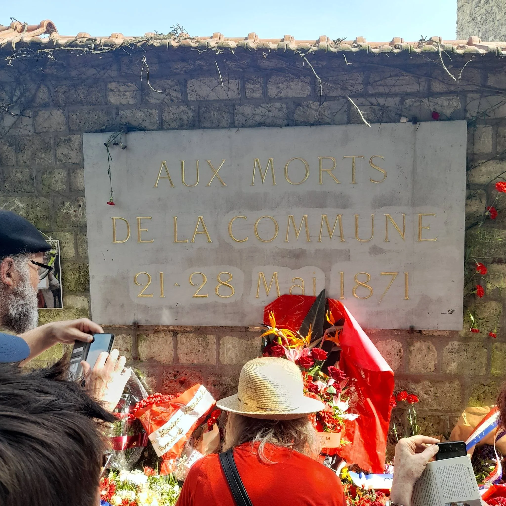
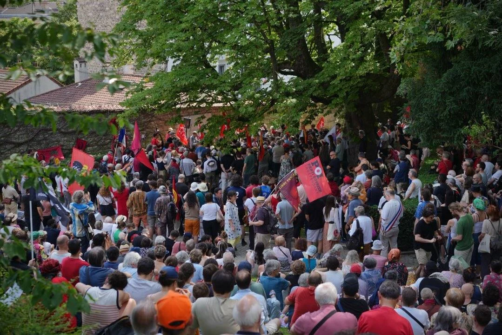
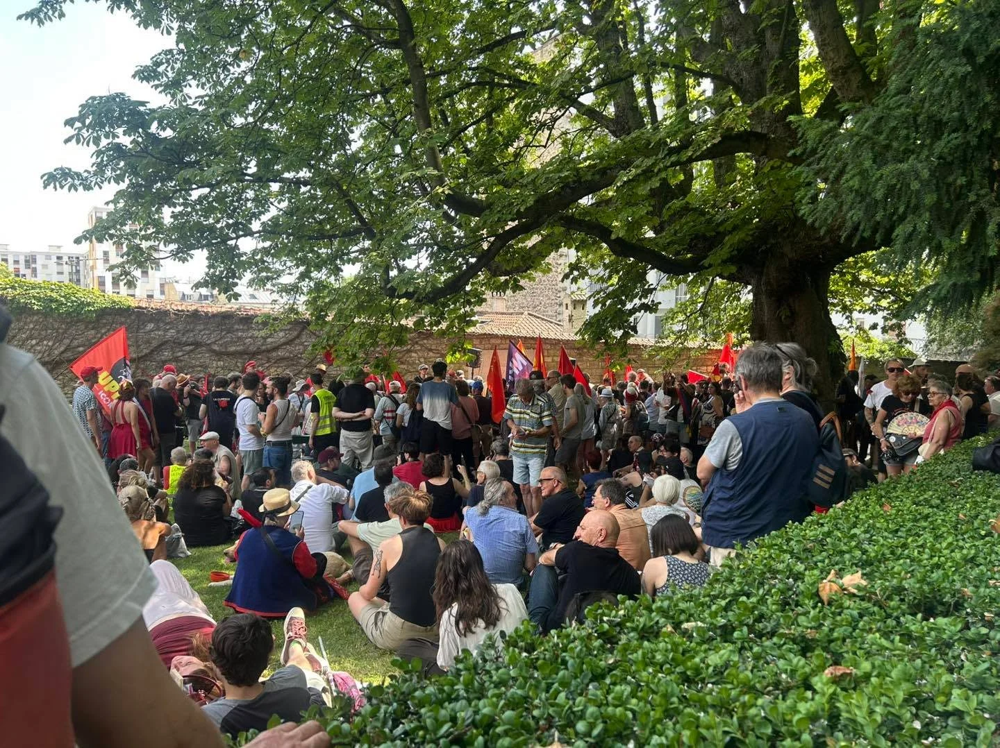

Commémoration relayée
« La Commune n’est pas morte ! » Au mur des Fédérés
Date indiquée par Facebook · 31 mai 2026
Repères éditoriaux
À l’initiative de l’association des Amies et Amis de la Commune de Paris 1871, des manifestantes et manifestants sont montés au mur des Fédérés, au Père-Lachaise, pour rendre hommage aux communards. Les photos du partage montrent le rassemblement et l’hommage au pied du mur.
Texte conservé avec la publication
La Commune n'est pas morte !
Des milliers de manifestants ont rendu hommage aux communards et à la Commune de Paris.
Dimanche, la gauche est montée au mur des fédérés au cimetière du Père-Lachaise à l'initiative de l'association des Amies et Amis de la Commune de Paris 1871.
La Commune n'est pas morte !



Sources
Archive rouge · export Facebook · AR-0002-FB-00765
À lire aussi · 155 ans après, vive la Commune de Paris !